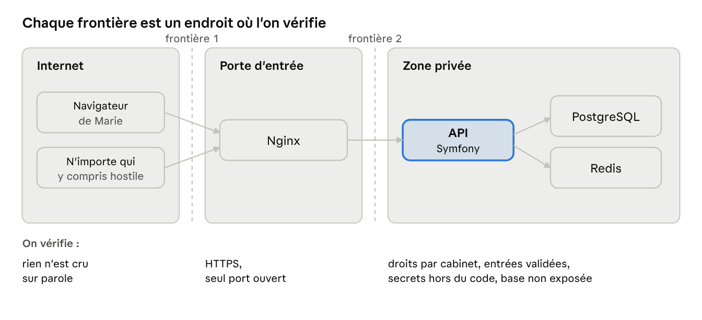
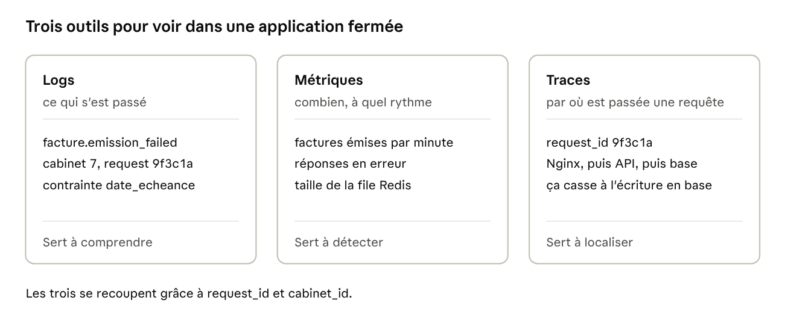
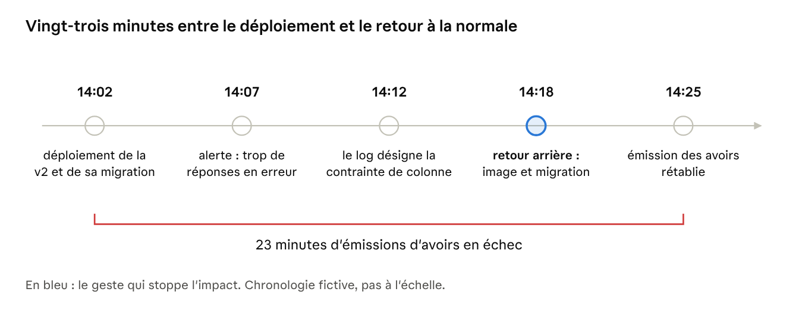
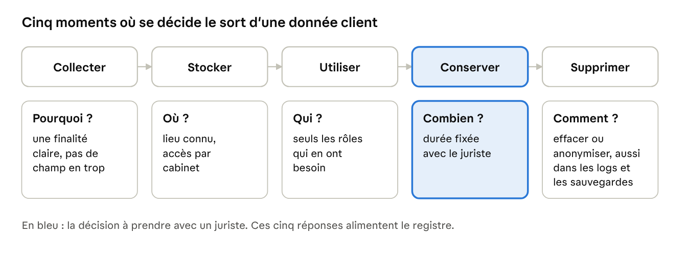

Module 6 : sécurité, observabilité, données et conformité
Ce que vous saurez faire
Ce module apprend à se poser les bonnes questions sur trois sujets que les agents traitent souvent trop vite : protéger l'application, voir ce qui s'y passe, et respecter les données des personnes. Vous n'êtes pas censé devenir expert en sécurité ou juriste. Vous devez repérer les signaux d'alerte et savoir qui appeler.
À la fin du module, vous saurez :
- décrire les frontières de confiance de Facturo et ce qu'on y vérifie ;
- reconnaître dans un code une injection SQL, un accès non contrôlé à une facture et un secret oublié dans le dépôt ;
- lire des logs structurés, des métriques et une trace pour situer une panne ;
- conduire un incident, puis écrire un post-mortem sans chercher de coupable ;
- tenir un registre des traitements de données et dire à quel moment poser la question au juriste.
Prérequis : modules 3, 4 et 5. Durée : 12 heures environ, sur deux semaines.
Lien avec Facturo : une facture contient le nom d'un client, son adresse, ses montants. Si le cabinet Giraud perdait ces données ou les voyait fuiter, la faute retomberait sur Facturo. C'est aussi dans ce module qu'on rejoue la mauvaise migration du module 5 comme un incident réel.
Leçon 6.1 : penser en frontières de confiance
La sécurité d'une application n'est pas un produit qu'on ajoute à la fin. C'est une habitude : à chaque endroit où des données passent d'une zone à une autre, on se demande « puis-je faire confiance à ce qui arrive ? ». Une frontière de confiance est cet endroit. Ce qui vient de l'extérieur est considéré comme non fiable tant qu'il n'a pas été vérifié.

Prenons le chemin d'une facture créée par Marie. Son navigateur est hors de notre contrôle : n'importe qui peut envoyer n'importe quoi à l'API, pas seulement l'application officielle. Donc l'API vérifie chaque entrée (est-ce un nombre ? un client qui appartient au cabinet de Marie ?) et chaque droit (Marie a-t-elle le droit de voir cette facture ?). La base de données, elle, ne parle qu'à l'API. Elle n'a pas besoin d'être joignable de l'extérieur.
Trois questions à poser devant n'importe quel code ou n'importe quelle modification :
- Qui peut appeler cela ? Faut-il être connecté ? Quel rôle ?
- Qu'est-ce qui entre ? Est-ce validé avant d'être utilisé ?
- Qu'est-ce qui sort ? Renvoie-t-on plus de données que nécessaire (mot de passe haché, notes internes) ?
À retenir
- Ce qui vient de l'extérieur n'est jamais cru sur parole.
- Les vérifications se font côté serveur : celles de l'interface React se contournent.
- Moins une zone est exposée, moins on a de choses à protéger.
Erreurs fréquentes
- Se contenter de valider les champs dans le formulaire du navigateur.
- Renvoyer l'objet complet de la base « pour simplifier », avec des champs que l'utilisateur n'a pas à voir.
Leçon 6.2 : trois failles à savoir reconnaître
Voici trois erreurs qu'un agent peut commettre et laisser passer. Pour chacune : le code dangereux, ce qu'un attaquant en fait, le code corrigé.
Faille 1 : l'injection SQL
Un champ saisi par l'utilisateur est collé tel quel dans une requête.
// DANGEREUX : la saisie est collée dans la requête
$sql = "SELECT * FROM facture WHERE numero = '" . $_GET['numero'] . "'";
$rows = $pdo->query($sql)->fetchAll();Si l'adresse est /factures?numero=' OR '1'='1, la requête devient WHERE numero = '' OR '1'='1' : elle est toujours vraie et renvoie toutes les factures de tous les cabinets. La correction consiste à ne jamais construire la requête avec la saisie, mais à la passer comme paramètre.
// CORRIGÉ : requête préparée, et filtre sur le cabinet de l'utilisateur
$stmt = $pdo->prepare(
'SELECT * FROM facture WHERE numero = :numero AND cabinet_id = :cabinet'
);
$stmt->execute(['numero' => $numero, 'cabinet' => $user->getCabinetId()]);Signal d'alerte : une requête construite par concaténation de texte (. en PHP, + en JavaScript, f"..." en Python) avec une valeur venue de l'extérieur.
Faille 2 : l'accès non contrôlé à une facture
C'est la plus fréquente et la plus discrète, car le code « fonctionne ».
// DANGEREUX : on vérifie que l'utilisateur est connecté, pas que la facture est la sienne
#[Route('/api/factures/{id}', methods: ['GET'])]
public function show(Facture $facture): JsonResponse
{
return $this->json($facture);
}Marie ouvre /api/factures/42. En changeant le 42 en 43, elle lit la facture d'un autre cabinet. Aucune injection n'a été nécessaire : il manquait une vérification de droit.
// CORRIGÉ : un voter vérifie que la facture appartient au cabinet de l'utilisateur
#[Route('/api/factures/{id}', methods: ['GET'])]
#[IsGranted('FACTURE_VIEW', subject: 'facture')]
public function show(Facture $facture): JsonResponse
{
return $this->json($facture);
}
// Dans FactureVoter : le droit se décide ici, en un seul endroit
return $facture->getCabinet() === $user->getCabinet();Le test qui protège : se connecter en tant qu'utilisateur du cabinet A, demander la facture du cabinet B, vérifier la réponse 403 (ou 404). Ce test s'écrit au module 4, et c'est exactement le genre de test qu'un agent oublie.
Signal d'alerte : une route qui reçoit un identifiant et le charge sans jamais le comparer à l'utilisateur connecté.
Faille 3 : le secret oublié dans le dépôt
$ git log --oneline -p -S 'DATABASE_URL' | head -5
+ DATABASE_URL=postgresql://facturo:Sup3rSecret@db:5432/facturoUn fichier .env a été commité « temporairement ». Même supprimé dans un commit suivant, le mot de passe reste dans l'historique Git. La correction tient en trois gestes : retirer le fichier du suivi et l'ajouter au .gitignore, changer le mot de passe (le secret est considéré comme compromis), puis remplacer par une variable fournie par la CI ou le serveur. Nettoyer l'historique ne suffit pas : on ne sait pas qui l'a déjà copié.
Signal d'alerte : un mot de passe, une clé ou un jeton lisible dans un fichier du dépôt, une image Docker ou un message de commit.
À retenir
- Injection : on passe les valeurs en paramètres, on ne les colle jamais.
- Accès : « connecté » ne veut pas dire « autorisé à voir cette ressource ».
- Secret exposé : on le change, on ne se contente pas de le cacher.
Erreurs fréquentes
- Corriger l'injection mais oublier de filtrer par cabinet.
- Se dire qu'un dépôt privé est un coffre-fort.
Leçon 6.3 : authentification, dépendances et mises à jour
Trois habitudes complètent les frontières :
- Mots de passe : ils ne sont jamais stockés en clair mais sous forme de condensé (hash) avec l'outil fourni par le framework, jamais une fonction maison. Un agent qui « invente » son propre chiffrement est un signal d'alerte.
- Tentatives répétées : on limite le nombre d'essais de connexion pour gêner les attaques par devinettes.
- Dépendances : l'application embarque des dizaines de bibliothèques tierces. Chacune peut avoir une faille connue. Les commandes d'audit des gestionnaires de paquets (
composer audit, disponible depuis Composer 2.4, etnpm audit) la signalent ; un code de sortie non nul permet de faire échouer le pipeline, et le pipeline du module 5 peut les lancer à chaque modification. Mettre à jour régulièrement, par petits pas, est moins risqué que tout reporter d'un an.
Avant d'accepter qu'un agent ajoute une nouvelle dépendance, posez-vous : est-elle maintenue ? Est-elle vraiment nécessaire ? Que se passe-t-il si elle disparaît ?
Leçon 6.4 : voir ce qui se passe, l'observabilité
Une application en production est une boîte fermée. L'observabilité est ce qui permet de regarder dedans sans l'ouvrir. Trois outils complètent chacun les autres.

Les logs sont le journal : un message par événement. Un bon log est structuré (des champs, pas une phrase libre), pour que l'on puisse filtrer et compter.
{"ts":"2026-11-12T14:07:31Z","level":"error","event":"facture.emission_failed",
"facture_id":1042,"cabinet_id":7,"request_id":"9f3c1a",
"error":"null value in column date_echeance violates not-null constraint"}Ce log est utile parce qu'il dit quoi (l'émission a échoué), pour qui (cabinet 7, sans le nom du client) et pourquoi (la contrainte). Règle de sécurité : on journalise des identifiants, jamais de mots de passe, de jetons ni de données personnelles inutiles.
Les métriques sont des chiffres dans le temps : factures émises par minute, taux de réponses en erreur, temps de réponse, taille de la file Redis. Elles répondent à la question « est-ce normal en ce moment ? ». On déclenche les alertes sur les symptômes que vivent les utilisateurs (les émissions échouent), pas sur les causes présumées (le processeur est à 70 %).
Les traces suivent une requête d'un bout à l'autre. Un identifiant unique (request_id) est créé à l'arrivée dans Nginx, puis recopié dans chaque log de l'API et du worker. Une recherche sur cet identifiant reconstitue le trajet complet d'une facture, et montre à quel maillon ça casse. Les outils spécialisés, comme OpenTelemetry, découpent une trace en étapes appelées spans ; l'identifiant de requête décrit ici en est une version simplifiée.
À retenir
- Logs : ce qui s'est passé. Métriques : combien et à quel rythme. Traces : par où est passée une requête.
- On alerte sur ce que vivent les utilisateurs.
- Un log ne contient ni secret ni donnée personnelle inutile.
Erreurs fréquentes
- Journaliser toute la requête, mot de passe compris, « pour déboguer ».
- Créer tant d'alertes que l'équipe cesse de les lire.
Leçon 6.5 : conduire un incident, puis écrire le post-mortem
Un incident est une situation où le service rendu aux utilisateurs est dégradé. Le rôle de l'orchestrateur n'est pas de trouver la cause lui-même, mais de garder la tête froide, d'imposer l'ordre des actions et de communiquer. L'ordre : 1. constater l'impact, 2. stopper l'hémorragie (le plus souvent par un retour arrière), 3. comprendre, 4. corriger durablement, 5. apprendre. On ne cherche la cause profonde qu'une fois le service rétabli.
Rejouons un incident fictif de Facturo, issu du module 5 : on a resserré trop tôt la base de données.

Le post-mortem est le compte rendu écrit après coup. Il est sans reproche : il cherche ce qui, dans le système, a laissé passer l'erreur, pas qui l'a commise. Si l'on punit, les gens cachent les incidents, et l'on n'apprend plus rien. Voici celui de l'exemple, rempli.
| Rubrique | Contenu |
|---|---|
| Résumé | Pendant 23 minutes, l'émission de certaines factures a échoué. |
| Impact | Les avoirs ne pouvaient pas être émis ; les factures classiques n'étaient pas touchées. Aucune donnée perdue. |
| Cause racine | Une contrainte de colonne obligatoire a été ajoutée dans le même déploiement que le code qui devait l'alimenter, et ce code oubliait le cas des avoirs. |
| Ce qui a bien fonctionné | L'alerte sur les erreurs a sonné en 5 minutes ; le log donnait la cause ; le retour arrière était préparé. |
| Ce qui n'a pas fonctionné | La migration n'avait pas été découpée en expand / contract ; aucun test ne couvrait l'émission d'un avoir avec échéance. |
| Actions | Voir le tableau ci-dessous. |
| Action | Responsable | Échéance |
|---|---|---|
| Ajouter un test d'émission d'avoir (module 4) | Agent de code, relu par vous | Cette semaine |
| Ajouter dans la grille de revue : « migration découpée ? » | Agent de revue | Cette semaine |
| Prévenir Marie et expliquer l'incident en trois phrases | Vous | Le jour même |
La communication fait partie de l'incident. Un message au client qui fonctionne : ce qui est arrivé, ce qui est rétabli, ce qui a été touché ou non, ce qu'on change pour que ça ne se reproduise pas. Sans jargon, sans minimiser.
À retenir
- Constater, stopper, comprendre, corriger, apprendre : dans cet ordre.
- Un post-mortem sans reproche trouve des causes de système et des actions concrètes, avec un responsable et une échéance.
- Le meilleur filet reste le retour arrière préparé à l'avance (module 5).
Erreurs fréquentes
- Chercher la cause avant d'avoir stoppé l'impact.
- Écrire « erreur humaine » comme cause racine : c'est le symptôme, la question est pourquoi le système l'a permis.
Leçon 6.6 : les données personnelles et le RGPD
Cette leçon est une introduction pédagogique, pas un avis juridique. Pour toute décision (contrats, durées de conservation, transferts hors de l'Union), consultez un juriste ou le délégué à la protection des données de l'organisation.
Une donnée personnelle est toute information qui se rapporte à une personne identifiable : nom, adresse e-mail, adresse postale, et donc les clients de Marie dans Facturo. Le RGPD est le règlement européen qui encadre leur traitement. Vous n'avez pas à le connaître par cœur, mais à savoir poser quatre questions pour chaque donnée : pourquoi la collecte-t-on, où est-elle stockée, qui y accède, combien de temps la garde-t-on ?

Le registre des traitements. D'après la CNIL, tout organisme, public ou privé, quelle que soit sa taille, qui traite des données personnelles doit tenir un registre écrit de ses traitements. Pour chaque traitement, il note : les finalités, les catégories de personnes et de données, les destinataires, les durées de conservation et, si possible, une description des mesures de sécurité. Les structures de moins de 250 personnes bénéficient d'un allègement limité, que la CNIL présente comme valable seulement dans des cas particuliers et occasionnels. En cas de doute, elle recommande d'inscrire le traitement au registre. La CNIL distingue aussi le responsable de traitement et le sous-traitant, qui tient un registre pour les traitements qu'il réalise pour ses clients. Facturo, qui traite les données des clients du cabinet pour le compte du cabinet, relève vraisemblablement de ce second cas ; la qualification exacte est une question juridique.
Voici une ligne de registre pour Facturo, à titre d'exemple fictif :
| Rubrique | Exemple |
|---|---|
| Traitement | Facturation des clients du cabinet |
| Finalité | Établir, envoyer et suivre les factures |
| Personnes concernées | Clients du cabinet Giraud |
| Données | Nom, adresse, e-mail, montants, numéros de facture |
| Destinataires | Le cabinet ; l'hébergeur et le fournisseur d'e-mails, en tant que sous-traitants |
| Durée de conservation | À confirmer avec le cabinet et un juriste (des obligations de conservation des factures existent) |
| Mesures de sécurité | Accès par cabinet, chiffrement HTTPS, sauvegardes testées, journalisation sans données inutiles |
Ce que cela change pour le code. Si la durée de conservation est fixée, il faut du code pour supprimer ou anonymiser ensuite ; si la finalité est limitée, on ne réutilise pas les e-mails de facturation pour une newsletter ; si l'on doit répondre à une demande d'accès ou d'effacement d'une personne, il faut pouvoir retrouver ses données, y compris dans les sauvegardes et les logs. Ce sont des exigences d'architecture, pas des détails.
Encadré : les données de santé. Certaines données sont dites sensibles, notamment les données de santé, et leur hébergement est encadré en France par une certification dédiée, la certification HDS (hébergeur de données de santé), prévue par l'article L. 1111-8 du code de la santé publique. Elle vise l'hébergement, pour le compte d'un tiers, de données de santé recueillies lors d'activités de prévention, de diagnostic, de soins ou de suivi social et médico-social, et l'Agence du numérique en santé publie la liste des hébergeurs certifiés. Facturo, outil de facturation d'un cabinet comptable, n'est pas concerné. La question se poserait si un client était un cabinet médical et que des données de santé se retrouvaient dans les factures. Cet encadré s'appuie sur une page de la CNIL et une fiche juridique (voir les sources) ; les pages de l'ANS n'ont pas pu être lues. Le périmètre exact dépend du cas : confirmez-le auprès d'elle ou d'un juriste.
À retenir
- Quatre questions par donnée : pourquoi, où, qui, combien de temps.
- Le registre est un document écrit, tenu à jour : il se prépare avec le juriste, pas après une plainte.
- La conformité se traduit en code : suppression, limitation des accès, journaux sobres.
Erreurs fréquentes
- Copier la base de production sur l'ordinateur d'un développeur ou dans un outil externe « pour tester ».
- Envoyer des données clients à un service tiers (un agent IA hébergé à l'extérieur, par exemple) sans savoir si c'est permis.
Atelier guidé : la revue de sécurité d'une modification
Votre agent de code propose une modification : une nouvelle route GET /api/clients/search?nom=... qui renvoie les clients dont le nom contient la saisie.
- Étape 1. Demandez à l'agent de vous montrer la requête SQL. Est-elle construite par concaténation ?
- Étape 2. Cherchez le filtre sur le cabinet de l'utilisateur. Sans lui, la route expose les clients de tous les cabinets.
- Étape 3. Regardez ce que la route renvoie : seulement le nom et l'identifiant, ou tout l'objet client ?
- Étape 4. Cherchez le test qui vérifie qu'un utilisateur du cabinet A ne voit pas les clients du cabinet B. S'il n'existe pas, demandez-le.
- Étape 5. Vérifiez ce que la route écrit dans les logs : la saisie complète, avec des noms de personnes, est-elle conservée ?
- Étape 6. Écrivez la revue en trois lignes : ce qui est bloquant, ce qui est à améliorer, ce qui est bon.
Critère de réussite : vous avez trouvé le filtre de cabinet manquant et le test manquant, sans lire chaque ligne du code.
Exercices (avec corrigés)
Exercice 1. Dans ce code, quelle faille voyez-vous : $pdo->query("DELETE FROM client WHERE id = " . $request->get('id')) ?
Corrigé
Injection SQL (la valeur est collée dans la requête) et absence de contrôle de droit (n'importe quel utilisateur supprime n'importe quel client). On corrige avec une requête préparée, un filtre sur le cabinet et une vérification de rôle.
Exercice 2. Votre agent vous dit : « J'ai ajouté console.log(request.body) pour déboguer la connexion. » Quel est le problème ?
Corrigé
Le corps de la requête de connexion contient le mot de passe, qui va se retrouver dans les logs. On retire la ligne, on vérifie si elle a été déployée, et si oui on traite les logs comme contenant des secrets (accès restreint, voire changement des mots de passe concernés).
Exercice 3. L'alerte indique que 40 % des émissions de factures échouent depuis le dernier déploiement. Que faites-vous en premier ?
Corrigé
Constater l'impact puis stopper : retour à l'image précédente (et à la migration précédente si besoin). On cherche la cause une fois le service rétabli, avec les logs et l'identifiant de requête.
Exercice 4. Un post-mortem indique comme cause racine : « le développeur a oublié un test ». Comment le reformuler ?
Corrigé
« Rien dans le processus n'exigeait un test sur l'émission d'un avoir, et la revue n'avait pas de ligne pour le vérifier. » On décrit ce que le système a permis, puis on en tire des actions : un test, une ligne de grille de revue.
Quiz
- Comment éviter l'injection SQL ?
- « Connecté » suffit-il pour lire une facture ?
- Un mot de passe a été commité puis supprimé : que faire ?
- Que montre une trace ?
- Quel est le premier geste en incident ?
- Quelles sont les 4 questions par donnée personnelle ?
Voir les réponses (après avoir répondu aux six questions)
| Question | Réponse | Pourquoi |
|---|---|---|
| Comment éviter l'injection SQL ? | Paramètres de requête préparée | La saisie n'est plus interprétée comme du SQL |
| « Connecté » suffit-il pour lire une facture ? | Non | Il faut aussi que la facture appartienne au cabinet |
| Un mot de passe a été commité puis supprimé : que faire ? | Le changer | Il reste dans l'historique Git |
| Que montre une trace ? | Le trajet d'une requête | Via un identifiant partagé entre les composants |
| Quel est le premier geste en incident ? | Stopper l'impact | La cause se cherche après le retour au service |
| Quelles sont les 4 questions par donnée personnelle ? | Pourquoi, où, qui, combien de temps | Elles structurent le registre |
Checklist du module 6
- Je sais dire quelles vérifications se font à chaque frontière de Facturo.
- Je repère une injection SQL, un accès non contrôlé et un secret dans le dépôt.
- Je sais lire un log structuré et suivre une requête par son identifiant.
- Je sais conduire un incident dans le bon ordre.
- J'ai écrit un post-mortem sans chercher de coupable.
- Je sais remplir une ligne de registre des traitements et poser les bonnes questions au juriste.
- J'ai fait la revue de sécurité de l'atelier.
Sources
Pages consultées le 16 novembre 2026. Les dates sont celles affichées sur les pages.
- OWASP Top 10:2025, OWASP (aucune date affichée) : « A01:2025 - Broken Access Control » et « A05:2025 - Injection » figurent dans la liste, qui a changé par rapport aux éditions précédentes : ne vous fiez pas à d'anciens numéros.
- SQL Injection Prevention Cheat Sheet, OWASP (aucune date affichée) : « use parameterized queries for dynamic data values » : leçon 6.2.
- Secrets Management Cheat Sheet, OWASP (aucune date affichée) : le problème des secrets écrits en clair dans le code ; la rotation régulière des secrets ; « Keys that were exposed should undergo immediate revocation » ; réécrire l'historique Git est possible mais peut casser des liens (table des matières lue en entier ; sections 1, 2.7.2, 3.2.1, 5.1, 8.1, 8.3 et 9.2 lues, les autres non relues mot à mot).
- Postmortem Culture: Learning from Failure, Google SRE (copyright 2017) : « Blameless postmortems are a tenet of SRE culture. » : leçon 6.5.
- RGPD : de quoi parle-t-on ?, CNIL (10 avril 2018) : une donnée personnelle est « toute information se rapportant à une personne physique identifiée ou identifiable ».
- Les durées de conservation des données, CNIL (2 avril 2026) : la durée n'est pas unique : le responsable la détermine en fonction de la finalité du traitement.
- Le registre des activités de traitement, CNIL (13 avril 2018) : qui doit tenir un registre, contenu, allègement pour les structures de moins de 250 personnes, responsable de traitement et sous-traitant.
- Sécurité : cloud, informatique en nuage, CNIL (14 mars 2024) : recourir à un fournisseur certifié HDS pour le traitement de données de santé ; l'Agence du numérique en santé publie la liste des hébergeurs certifiés.
- Héberger des données de santé, Lefebvre Dalloz (source secondaire) (9 décembre 2022) : l'hébergeur de données de santé à caractère personnel doit être titulaire d'un certificat de conformité ; données recueillies lors d'activités de prévention, de diagnostic, de soins ou de suivi social et médico-social.
- Command-line interface, commande audit, Composer (aucune date affichée) : vérifie les paquets installés par rapport aux avis de sécurité ; code de sortie 1 en cas de paquets en infraction. La commande est apparue avec la version 2.4 (journal 2.4.0-RC1, 21 juillet 2022).
- Signals, OpenTelemetry (aucune date affichée) : trace, « The path of a request through your application » ; métrique, « A measurement captured at runtime » ; log, « A recording of an event ».
Non vérifié sur une page officielle ouverte : le texte exact de l'article L. 1111-8 du code de la santé publique et les pages esante.gouv.fr sur la certification HDS (elles se chargent vides) ; l'encadré santé s'appuie sur une page de la CNIL et sur une fiche d'un éditeur juridique, et son périmètre exact reste à confirmer auprès de l'ANS ou d'un juriste. Aucune date de référentiel HDS n'est citée : les sources consultées ne concordent pas. Non vérifiées également : les bonnes pratiques d'observabilité au-delà des définitions des signaux d'OpenTelemetry (logs structurés, alerte sur les symptômes), l'expression « trois piliers » qui est d'usage courant, et la description technique des failles hors documentation OWASP citée. Les durées de conservation précises sont laissées à confirmer pour chaque traitement. Les exemples sont donnés à titre pédagogique.